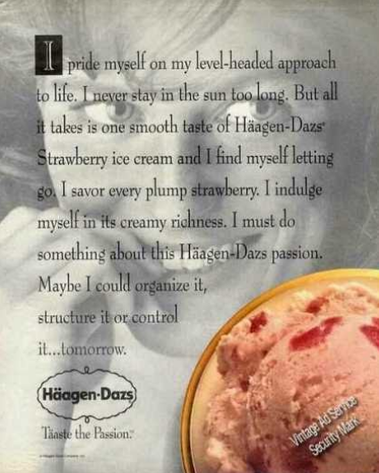
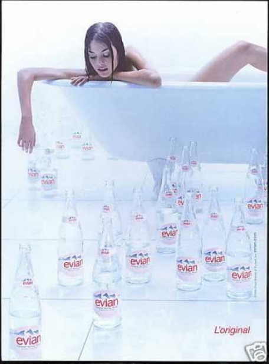

The Nineties
Advertisement 1 Analysis
This advertisement is for the notorious ice cream brand Haagen-Daz and is different from most advertisements we normally see. Usually, a print advertisement will consist of an image or photo with little to no words, however this one focuses on a brief text bubble and adds a picture of a woman in the background as well as a shot of their ice cream in the bottom corner. Both the photo of the woman and the text are blatantly sexual and can be read in multiple ways. By using vocabulary such as “savor,” “plump,” “indulge,” “passion,” etc, the advertisement insinuates the ice cream seducing the woman in the photo. Her expression and body language - biting her lip, looking seductively at something - also implies that she is craving and yearning for something, in this case, ice cream. While not entirely overt, it can be easily inferred that this ad carries a sexual innuendo which sexualizes not only the ice cream but also the woman. It also should be noted the advertisement is about strawberry ice cream in particular, a pink colored dessert which can be associated with women, femininity, and fun. While the advertisement is for a particular food, it is clear the underlying message is sexuality and passion. By using certain words and phrases, adding a suggestive woman in the background, and choosing to include strawberry ice cream in the advertisement, it insinuates a hypersexualized and passionate reading of the ice cream which hopes to “seduce” the audience and consumer.
Advertisement 2 Analysis
This advertisement is for Evian water, which is clearly depicted in the advertisement. However, along with the numerous water bottles is a naked woman in a bathtub who seems to be reaching towards the bottles, some empty and some full of water. It is not clear what the main message of the advertisement is - perhaps the bath is empty so the woman is reaching for the bottles of water to fill the tub - but it is clear that the woman is the main subject of the advertisement. Her arms and one leg peeking out from the tub to show she is nude are evidently on display, along with her curious and determined face reaching for the water bottles. Even while bathing, she is perfectly positioned with a seductive facial expression and tame hair. She does not look as if she is in the middle of a bath and we are interrupting her, but more so that she is posing for the photo. The sexualization of the woman is especially blatant due to the fact that there is no text or context which connects the woman to the water company somehow. One could not even be able to tell this is an advertisement for Evian if it was not for the labels on the sprawled out water bottles. A common theme of sexualized advertisements is including an image or depiction of a woman in a suggestive manner or position with little to no connection with the product or message being advertised, a practice which is extremely prevalent in this advertisement.
Citation: Vintage ad browser. (n.d.). Retrieved November 29, 2021, from https://www.vintageadbrowser.com/.